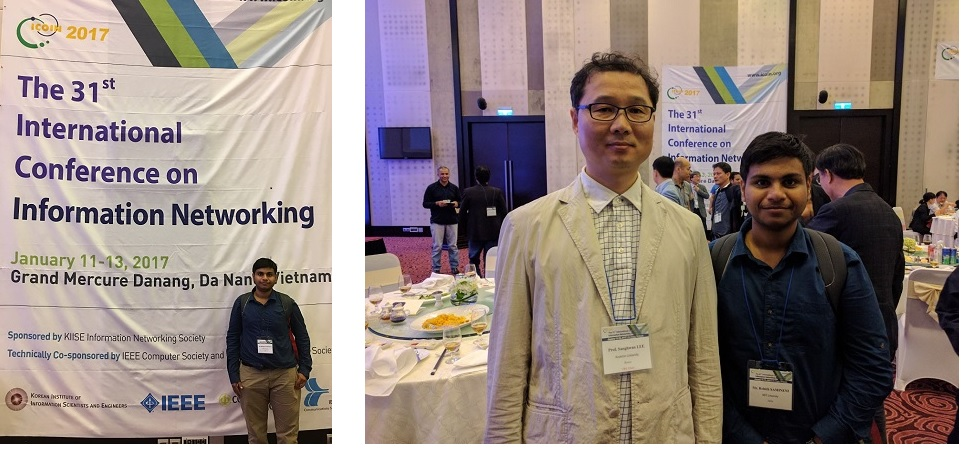

This paper aims at designing a basic home automation system of controlling multiple appliances which can be monitored and accessed from anywhere in the world with very low cost. The technology incorporates Raspberry Pi and the web server. The Raspberry Pi and Arduino integrated with Nrf modules are used to monitor the home environment appliances, and the readings are passed to the web server designed. The parameters or commands sent through web page are monitored frequently and if any threats found the mobile connected to this web server is alerted through an alarm or message. The user can access this application from anywhere in the world. The result produced is low cost advantageous and absolute. Performance Analysis of different protocols (MQTT, HTTP and CoAP) is estimated using visualizations.
 Presented at ICOIN 2017Danang,Vietnam.
Vehicular Networks has a great potential to enhance the lives of people. When vehicular networks are integrated with Mobile Application, Web Application, cloud technology and Internet of Things, it helps to make the driving experience pleasant and safe. This paper aims to enhance the driver assistance by assisting in directions, transit time, and to cope up with the avoidable situations and emergency situations by also monitoring the vehicle’s position, speed, lane tracking. The defined model aims to deliver reliable help in emergency situations by using efficient protocols to communicate to the cloud and efficient database retrieval methods to make the query respond faster and to provide a unique and safe experience to the driver.
Published at ICMLSC 2017HoChiMin,Vietnam.
With the increasing population, the demand for more agricultural production is only surged. This increasing demand can only be attained with progressing technology. Internet of Things (IoT) is dramatically advancing the way we live our life by full-scale control over data with minimal human involvement. Using IoT to meet this high demand for production is achieved. In this paper we propose a bot that can be used for small scale farming in areas like gardens or backyard. A simple web application is provided for the user to decide the plants to be farmed and the bot does rest of the work. This bot can plant the seeds, water each plant at required intervals and even plot the weed to bury it. A database is provided with the information about several parameters to be taken care of for each kind of plant. Different sensors are used to sense the properties of soil and environment which can be used to anticipate the near changes and take necessary steps. Image processing is being used for detection and prevention of weed growth. We adopted Bayesian methods of machine learning to efficiently estimate the performance parameters by probability distribution.
Published at ICMLSC 2017HoChiMin,Vietnam.